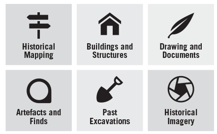
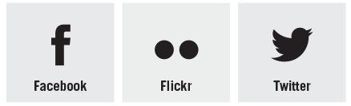

Hacking Historic Lancaster
Introduced by Jo Cook / @archaeogeek
Who's Jo?
I'm an open source geo-geek and recovering archaeologist.
I worked on the Lancaster Urban Archaeological Database when it was completed by Oxford Archaeology (North).
The data from that project makes up the main body of data available to you today.
OK, but what's an Urban Archaeological Database?
A method for managing the archaeological resource for a historic city in a structured and retrievable way
Yes, but what does that mean?
Data on, and from archaeological excavations, historic building recording, historic maps, air photos, historic images...
The main intention of a UAD is as a decision-making tool for planning and development control
but it's a lovely resource to play with :-)
Events and Monuments
UADs are split into two main components: monuments and events
Monuments are the actual archaeological or historical remains, and events are the things that discover or record them
They then have a number of supporting tables, for describing who did the work and what the bibliographic references are, and even more lookup tables for controlling the vocabulary used
Show me the API!
Patience! We need to talk about the documentation first!
Basics
All the data has been imported into a spatial database (PostgreSQL/PostGIS), and two main methods have been used to expose it to the outside world:
- Web Mapping and Web Feature Services- this gets you either image-based representations (WMS) or GML-based representations of the spatial data and mapping
- REST- this gets you json-based representations of the tabular data (spatial or non-spatial)
Pretty base mapping
Also available is some lovely georeferenced historic mapping, and some modern Ordnance Survey base mapping, for you to overlay your data onto.
Where's the documentation?
http://hacklancaster.github.io/beyondthecastle_uad
This contains all the information on how to access the endpoints, some more information about the structure of the data in the database, and links to supporting resources
I don't know where to start!
That's OK, you've got plenty of time.
Start by exploring the data- download something like QGIS http://qgis.org for an open source desktop GIS, which will allow you to view the base mapping and spatial data.
Look at other public apis such as Facebook, Twitter, Flickr, and see if you can see any interesting links between them and the historic data
...otherwise...
Some starting ideas
- What is beneath my feet?
- How can I make this data accessible to the public?
- Can I compare historic images with modern ones using flickr or google?
- Are there any correlations between crime and historical sites in the city? (other than the prison, of course)
- ...
Keep the OctoCat happy!
We encourage you to commit any code that you produce at the event to GitHub
To have it included in the HackLancaster repository, tell us your repository and we will fork it at
https://github.com/hacklancaster

Above all, have fun!
I'll be wandering around throughout the hack, answering questions and helping out
If you know of an api that you'd like to use, then come and talk to me and we'll figure out how
and don't forget that hacks mean prizes!
#hacklancs